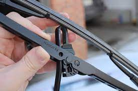

Back To Home Page
Step 2: Remove the Old Ones
First, pull the entire wiper assembly up, so that they remain vertical. Then turn the blade perpendicular to the arm so that the hinge is visible. You'll notice a small tab on one side of the hinge. Pull that tab* out (you'll here a snap) and then pull the wiper down, towards the car. Now that the blade and arm are separated, remove the blade through one of the holes on the blade. With the blade removed, the wiper arms are now unprotected metal, so don't leave the arm up if you turn away to get your new wipers. If they were to fall back down, it would not be good for your windshield. I like to lay down the old wiper in a way that it would catch the arm should it fall...just in case.
*If your tab appears broken, you can use a key to pop out the remaining nub.
